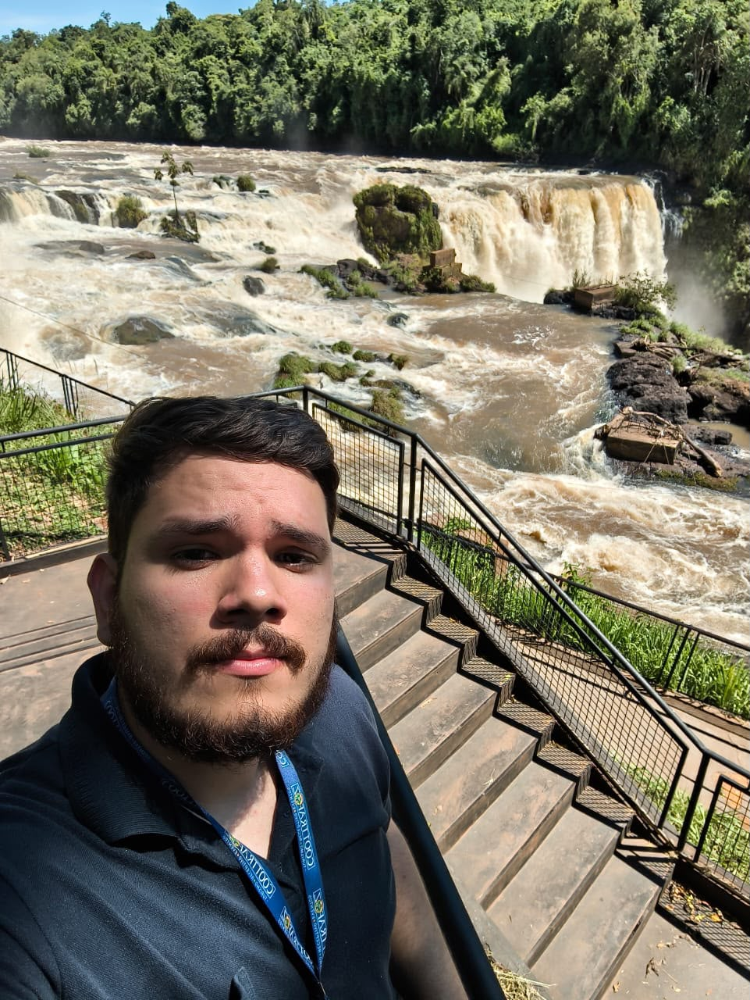

Guia e motorista de turismo
Experiência
Mais de 5 anos no turismo
Idiomas
Português, Inglês e Espanhol
Especialidade
Foz do Iguaçu e Tríplice Fronteira
Serviço
Guia e motorista de turismo
Valdemar Coutinho Filho
Com mais de 5 anos de experiência no turismo, Valdemar Coutinho Filho é guia e motorista de turismo e conhece profundamente os principais destinos de Foz do Iguaçu e da Tríplice Fronteira.
Seu conhecimento da região permite proporcionar aos visitantes uma experiência mais completa, confortável e segura, compartilhando informações importantes e ajudando cada turista a aproveitar melhor os destinos visitados.
Mais do que apenas realizar o transporte, nosso objetivo é fazer parte da sua viagem e ajudar você a aproveitar cada destino da melhor maneira possível.
Falar com a equipe Falar com a equipe
Falar com a equipe